Yoni's StreamYoni's Stream convierte tu Android en un estudio de producción completo: escenas, capas, mezclador de audio, alertas y multistream, sin ordenador.
Desliza y sal en vivo
ESTUDIO EN TU BOLSILLOOVERLAYS EN VIVOMULTISTREAM Y GRABACIÓNAUDIO PROFESIONALCONSOLAS, CAPTURADORAS Y CÁMARASASISTENTE INTELIGENTEESTUDIO EN TU BOLSILLOOVERLAYS EN VIVOMULTISTREAM Y GRABACIÓNAUDIO PROFESIONALCONSOLAS, CAPTURADORAS Y CÁMARASASISTENTE INTELIGENTE
ESTUDIO EN TU BOLSILLOOVERLAYS EN VIVOMULTISTREAM Y GRABACIÓNAUDIO PROFESIONALCONSOLAS, CAPTURADORAS Y CÁMARASASISTENTE INTELIGENTEESTUDIO EN TU BOLSILLOOVERLAYS EN VIVOMULTISTREAM Y GRABACIÓNAUDIO PROFESIONALCONSOLAS, CAPTURADORAS Y CÁMARASASISTENTE INTELIGENTE
Capturas
Así se ve por dentro
Capturas en
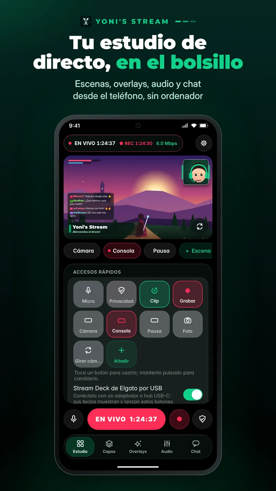
ESTUDIO EN TU BOLSILLOEscenas con capas: cámara trasera y frontal, pantalla y juegos del teléfono, imágenes, vídeos, textos, navegador y chat.
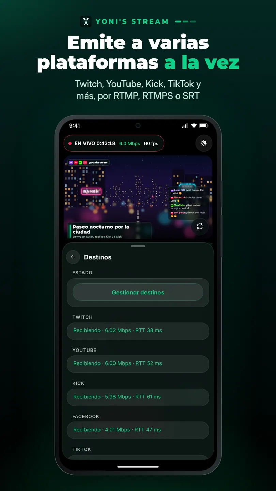
MULTISTREAM Y GRABACIÓNEmite a varias plataformas a la vez por RTMP, RTMPS o SRT: Twitch, YouTube, Kick, TikTok LIVE, Instagram Live, Facebook, X o tu propio servidor.
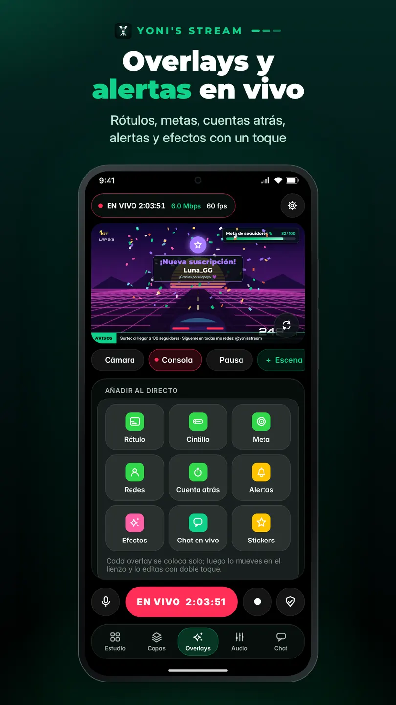
OVERLAYS EN VIVOAlertas automáticas de suscripciones, bits, raids, Super Chats, miembros, Kicks y regalos de TikTok, con sonidos y efectos (confeti, corazones, fuegos artificiales…).
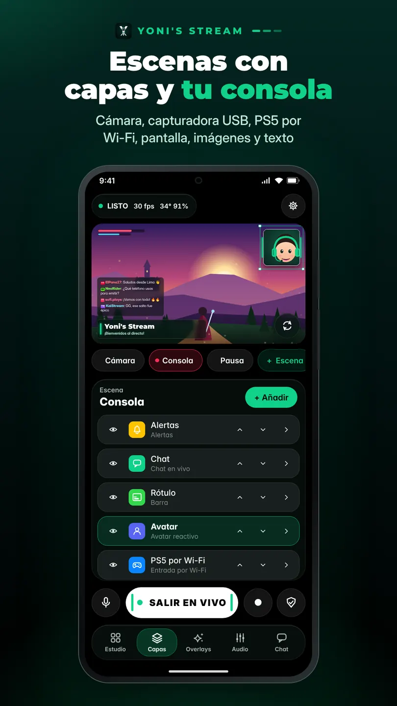
CONSOLAS, CAPTURADORAS Y CÁMARASPS5 y PS4 por Wi-Fi sin capturadora, un PC con OBS u otro teléfono como emisor.
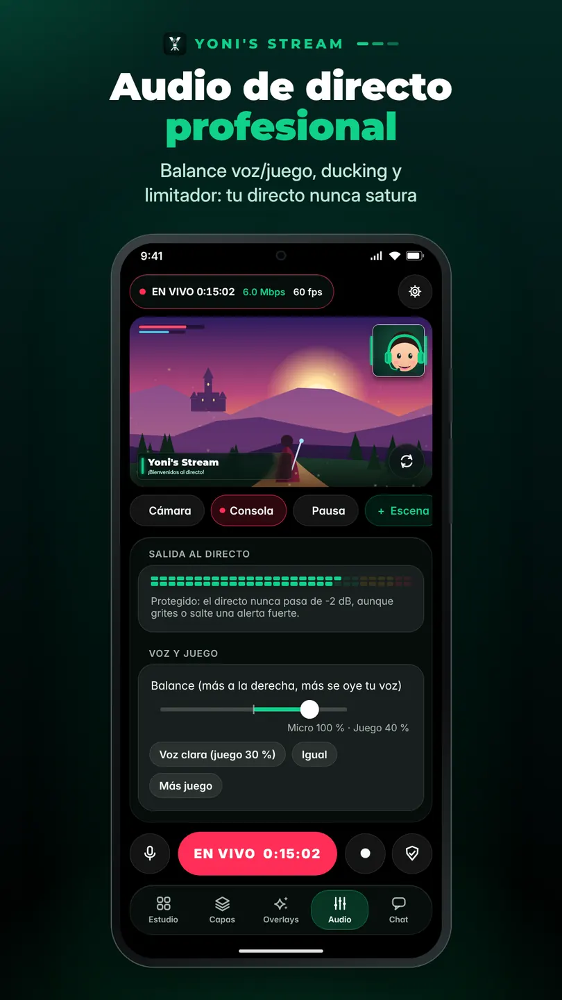
AUDIO PROFESIONALBalance voz/juego, ducking, supresión de ruido, compresor y limitador de salida.
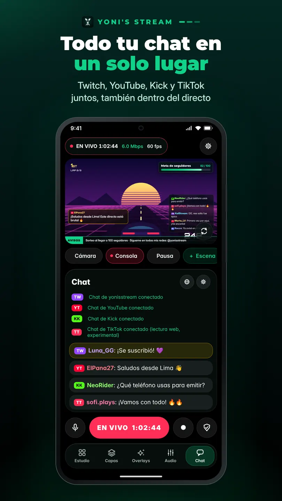
OVERLAYS EN VIVOChat de Twitch, YouTube, Kick, TikTok y Discord juntos dentro del directo, con lectura en voz alta.
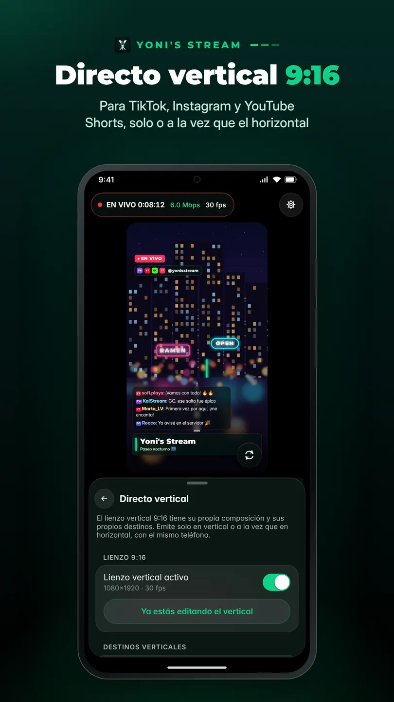
ESTUDIO EN TU BOLSILLOLienzos horizontal 16:9 y vertical 9:16 a la vez, para TikTok, Instagram y YouTube Shorts.
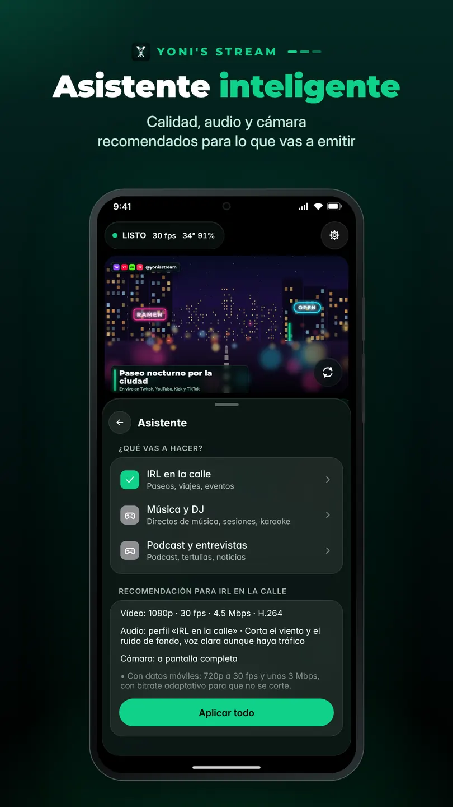
ASISTENTE INTELIGENTETe recomienda calidad, audio y posición de la cámara según tu juego o actividad y tu conexión.
Funciones
Todo lo que tu directo necesita
Realiza directos IRL hacia Twitch y YouTube con overlays en vivo desde la comodidad de tu teléfono. Graba tus vídeos con overlays como un profesional.
01 / 06
ESTUDIO EN TU BOLSILLO
Escenas con capas: cámara trasera y frontal, pantalla y juegos del teléfono, imágenes, vídeos, textos, navegador y chat.
Modo estudio con vista previa y transiciones: corte, fundido, deslizar, mover y stinger.
Lienzos horizontal 16:9 y vertical 9:16 a la vez, para TikTok, Instagram y YouTube Shorts.
Escudo de privacidad: tapa el directo durante una llamada o al salir del juego.
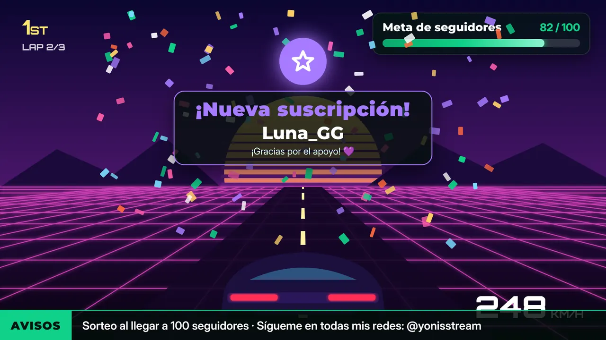
02 / 06
OVERLAYS EN VIVO
Barras, rótulos, cintillos, metas, cuentas atrás y tus redes, con más de 2000 fuentes.
Alertas automáticas de suscripciones, bits, raids, Super Chats, miembros, Kicks y regalos de TikTok, con sonidos y efectos (confeti, corazones, fuegos artificiales…).
Comandos del chat para que tu público lance efectos y sonidos.
Chat de Twitch, YouTube, Kick, TikTok y Discord juntos dentro del directo, con lectura en voz alta.
Exporta tus overlays a OBS y Streamlabs, o importa los tuyos.
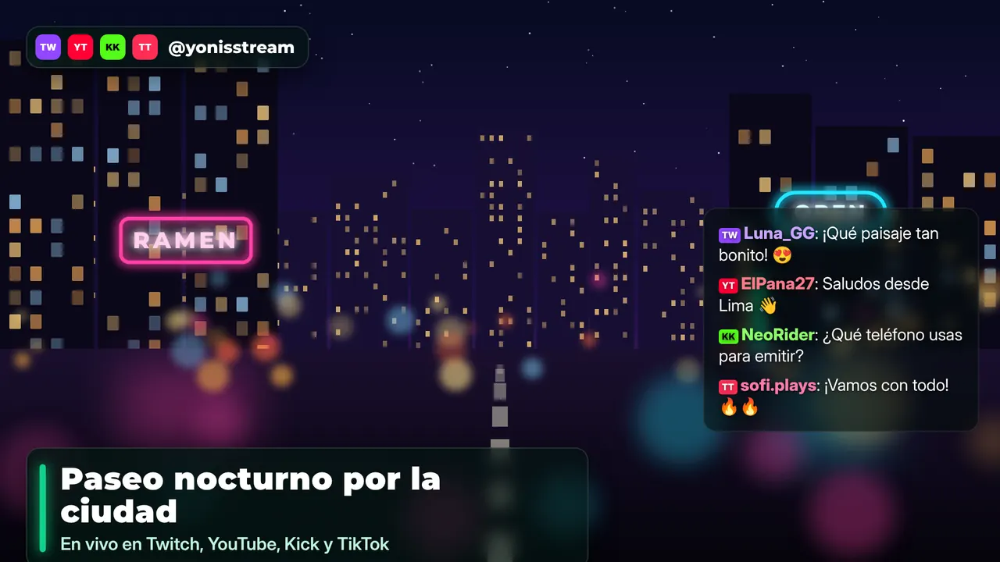
03 / 06
MULTISTREAM Y GRABACIÓN
Emite a varias plataformas a la vez por RTMP, RTMPS o SRT: Twitch, YouTube, Kick, TikTok LIVE, Instagram Live, Facebook, X o tu propio servidor.
Graba hasta 4K a 60 fps con pausa y guarda clips de los últimos segundos.
H.264 y HEVC por hardware, bitrate adaptativo y reconexión automática.
Control del calor y de la batería para directos de muchas horas.
0 dB−6−12−24−48
04 / 06
AUDIO PROFESIONAL
Mezclador con micrófono, audio interno de juegos y apps, música y efectos de sonido.
Balance voz/juego, ducking, supresión de ruido, compresor y limitador de salida.
Perfiles listos: juego y voz, charla, podcast, música de fondo, ASMR e IRL en la calle.
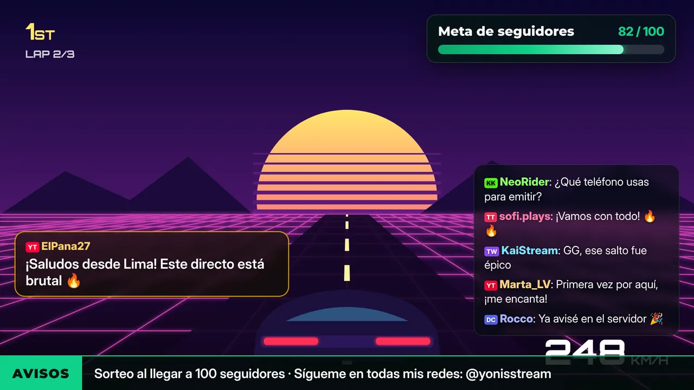
05 / 06
CONSOLAS, CAPTURADORAS Y CÁMARAS
Capturadoras USB (UVC), también Elgato.
PS5 y PS4 por Wi-Fi sin capturadora, un PC con OBS u otro teléfono como emisor.
Cámaras IP por RTSP y cámaras de acción por RTMP.
Stream Deck de Elgato por USB y botones táctiles de acceso rápido.
1080p60 fps6.0 MbpsH.26448 kHzHEVC
06 / 06
ASISTENTE INTELIGENTE
Te recomienda calidad, audio y posición de la cámara según tu juego o actividad y tu conexión.
También en tu tableta
Lienzo, panel y controles a la vista, a la vez.
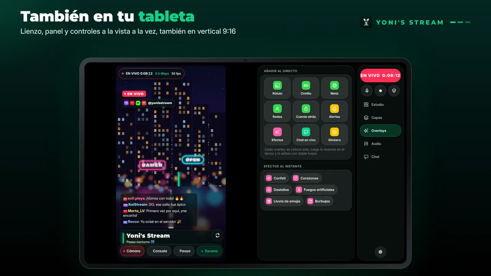
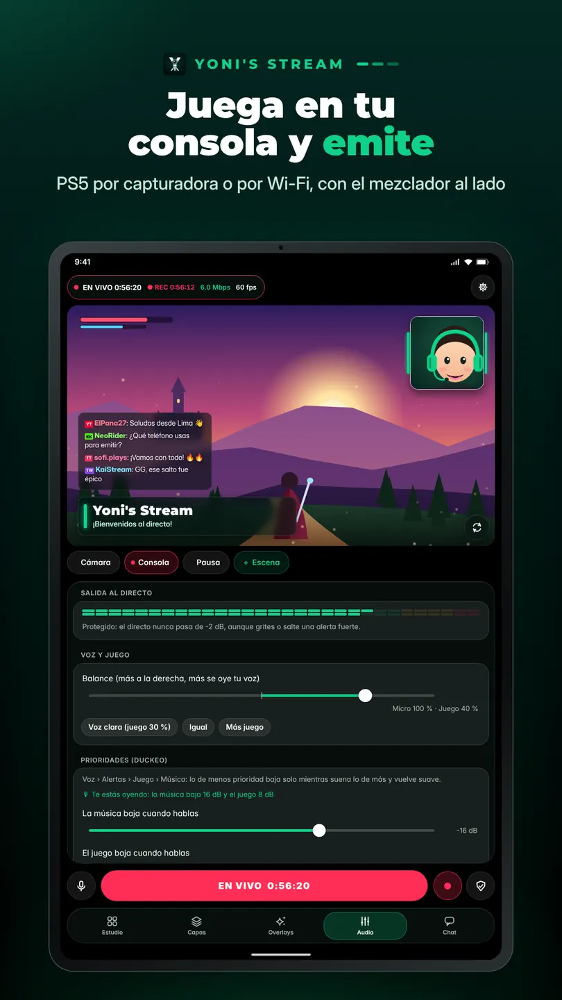
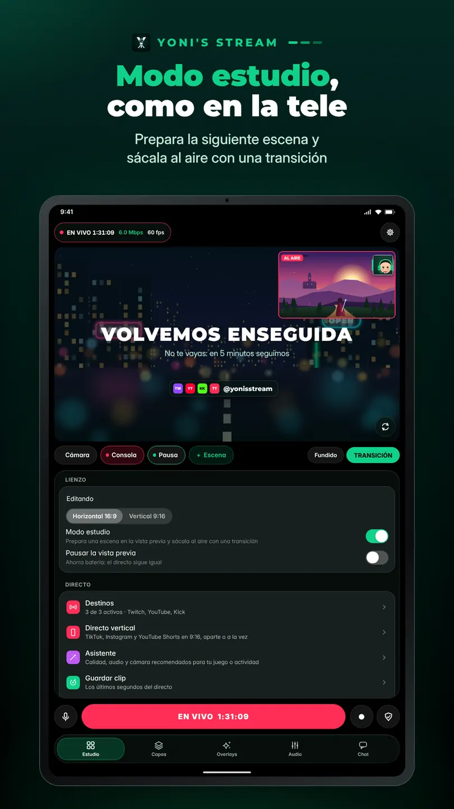
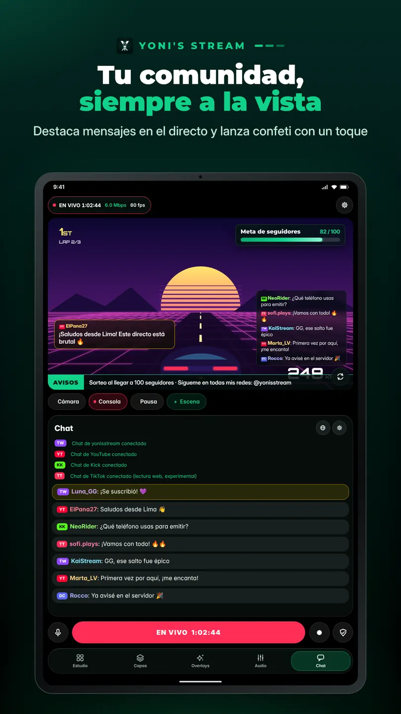
PLANES
Sin plan: prepara escenas y overlays.
Prueba gratis de 5 días (cuentas nuevas): directo y grabación hasta 1080p a 30 fps, 2 h al día.
Deluxe Studio: hasta 1080p a 60 fps, 5 h de directo al día, multistream a 3 plataformas y reconexión automática.
Streamer: todo sin límites (4K60, escenas y overlays ilimitados, todas las plataformas, Stream Deck, capturadoras y cámaras profesionales, todas las fuentes, perfiles de audio, filtros, asistente y lectura del chat).
Las suscripciones se renuevan cada mes y puedes cancelarlas cuando quieras en Google Play.
PRIVACIDAD
Sin anuncios ni rastreo. Tu vídeo va solo a las plataformas que eliges; tus escenas y claves se guardan en tu teléfono y, si quieres, en tu propio Google Drive.
Una señal, cinco salidas
Sígueme en todas partes
Directos, trucos y novedades de Yoni's Stream. Elige tu red favorita y no te pierdas nada.